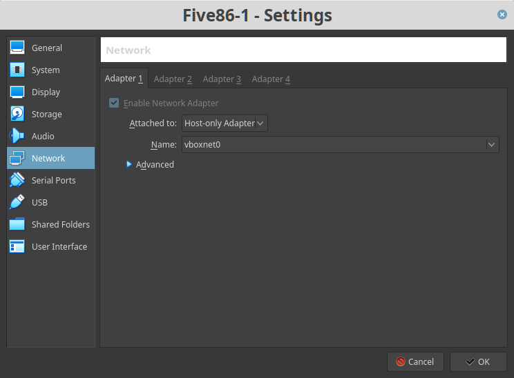
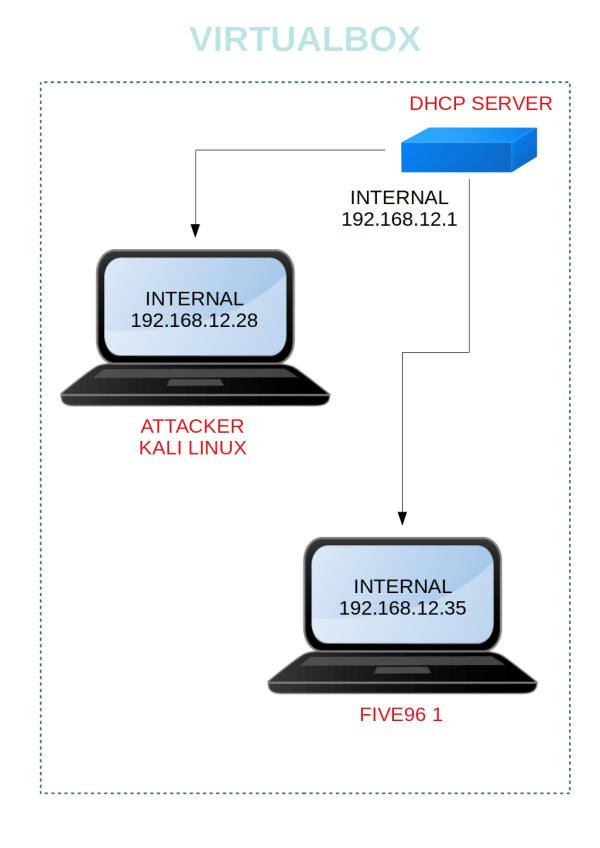

Five86 1
▸ 1. Scan Network
▸ 2. Finding Services and Ports
▸ 3. Enumeration
▸ 3.1 Port 80
▸ 4. Exploitation
▸ 4.1 Look for Exploit
▸ 4.2 Using the exploit
▸ 4.3 Python on-liner
▸ 4.4 Create dictionary with Crunch
▸ 5. Privilege Escalation
▸ 5.1 Change user
▸ 5.2 Generate an ssh key for our second user
▸ 5.3 Connect with "jen" user via ssh
▸ 5.4 Enumerate directories
▸ 5.6 Finding the flag
Difficulty: Intermediate
Flag: 1 flag.
Learning: Network scanning | Enumeration | Exploit OpenNetAdmin
| Privilege Escalation
Download (Mirror): https://download.vulnhub.com/five86/Five86-1.zip
Download (Torrent): https://download.vulnhub.com/five86/Five86-1.zip.torrent
Install the machine on VirtualBox:
1. Download the file and extract it.
2. On Virtualbox choose File->Import Appliance.
3. Select the file “ova”.
4. Accept to import.
Virtual Machine Network Settings


Watch your Machine IP.

Diagram
 Index
Index